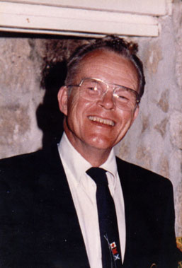

|
Frank as a baby. |
Frank Bush Marshall, named after his father, was born 29 June 1925 to Frank and Catherine Marshall in Baltimore, MD. He also had a younger sister, Betty. A rather precocious child, Wunderkind in the parlance of his forebearers, young Frank excelled in school. |
| Frank attended St. John's College in Annapolis, MD. He served in the Allied occupation army after WWII. |
Strapping young Frank with Jungfrau (in the Swiss Alps) in the background. |
|
Frank holding the family dog Liebchen in 1967. |
Frank married Ruth Gertrude Thompson 17 September 1949 in Severna Park, MD and lived there for the rest of his life. His first child, a son, died as a baby of a brain tumor. Later he had two daughters, Amy and Sally. He worked as a stockbroker for Alex Brown in Annapolis. |
| Frank's five grandchildren called him "Pop". He was a smoker, a habit which cost him his life. He died 26 March 1992 in a hospital in Annapolis, MD of emphysema. |

|